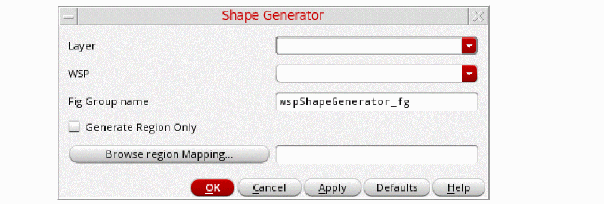

Generating Shapes for Layout Verification
The WSP shape generator utility creates layers, such as diffCheck, as required on the top level of the current cellview for DRC layout verification. When you use this utility, any existing hierarchical shapes or blockages on the layer are placed as cutouts. The generated shapes are derived from WSP tracks and design rules are not applied on these shapes. If you are using region id shapes, you must to space these shapes an appropriate distance apart to avoid minimum length violations being created.
To open the WSP shape generator utility:
-
Choose Tools – Create shapes from Width Spacing Pattern.
The Shape Generator form is displayed.
 - Select the layer on which the shapes need to be generated from a WSP.
-
Select the WSP from the drop-down. Specify the fig group name inside which the shapes that are generated are to be placed.
The default fig group name is cellview_fg. If you do not specify name in the fig group field, the layer shapes are generated at the top level instead of being placed inside a fig group. - Select the Generate Region Only option if you want to use the region map file WSP selection and instead of WSP specified in the WSP field.
-
Click the Browse region Mapping button to select the region mapping file that should be used to guide where a specific WSP should be used instead of applying the selections in the fields above.
The mapping file specifies the name of the region ID layer or region ID layer-purpose pair followed bylayer:WSSPDef:WSP,RegionIDLayer:RegionIDPurpose layer:WSSPDef:WSP. If specifying a layer-purpose pair, it generates only the WSP shapes in the specified layer-purpose pair area. When you select this file, a temporary WSP local regions is created in the design and the generated shapes follow the local regions WSP patterns.
To ensure legal shapes are generated by the utility, blockage objects are used. If the blockage is partially overlapping a WSP track, the tracks are trimmed to prevent slivers from being created.
Related Topics
Launching the Track Pattern Assistant
Track Pattern Assistant Toolbar
Return to top